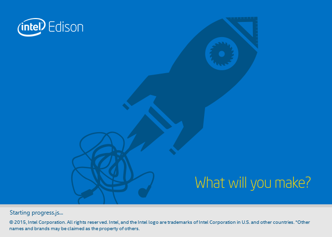

Download and run the Intel® Edison integrated installer
The Windows 64-bit Integrated Installer gives you options to automatically install:
- Intel® Edison and FTDI serial drivers on your Windows computer,
- an IDE of your choice (Arduino, Intel XDK® for IoT, and/or Eclipse), and
- the latest firmware image on your Intel® Edison.
-
Get the latest Intel® Edison 64-bit Windows installer.
- On the USB key: downloads → Windows
- Copy iotdk_win_installer.exe to your computer.
-
Connect a micro-USB cable to the device mode micro-USB port of the Intel® Edison expansion board, and the other end to your computer.

Refer to Device mode micro-USB cable for more detailed cable connection information.
-
Double-click on the iotdk_win_installer.exe on your computer to begin installation.

-
Follow the installation wizard. Click “Next” where needed.
-
When done, click “Finish” to close the installation wizard.
If there are any errors during installation, you will need to resolve them manually.
Is the “Next” button greyed out?
The integrated installer is unable to detect your Intel® Edison. Ensure that the board is powered on and plugged into your computer via the device mode micro-USB port on the expansion board.
Otherwise you will need to install the Windows drivers manually. Go to Set Up Your Computer - Windows (manual installation) »
The default settings can be adjusted to your needs, or leave the defaults as is.
In the component selection screen, check the options you would like to install:
-
Drivers:
Installs the Intel® Edison drivers and FTDI serial drivers for Windows. -
Update image:
Flashes the latest firmware image directly on your Intel® Edison.(Note: You will not be able to use this option until after you have installed the drivers. Re-run the integrated installer if you wish to use it to flash Intel® Edison firmware.)
-
Development Environment: Choose from
- Arduino Software (simplified C++),
- Intel® XDK IoT Edition (JavaScript), and/or
- Eclipse (C/C++).